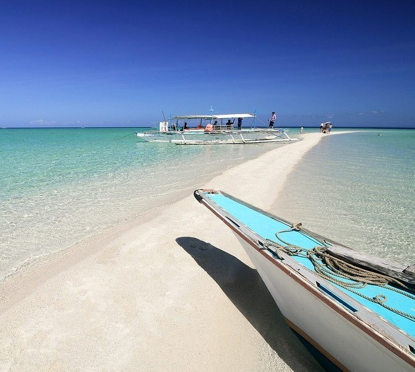
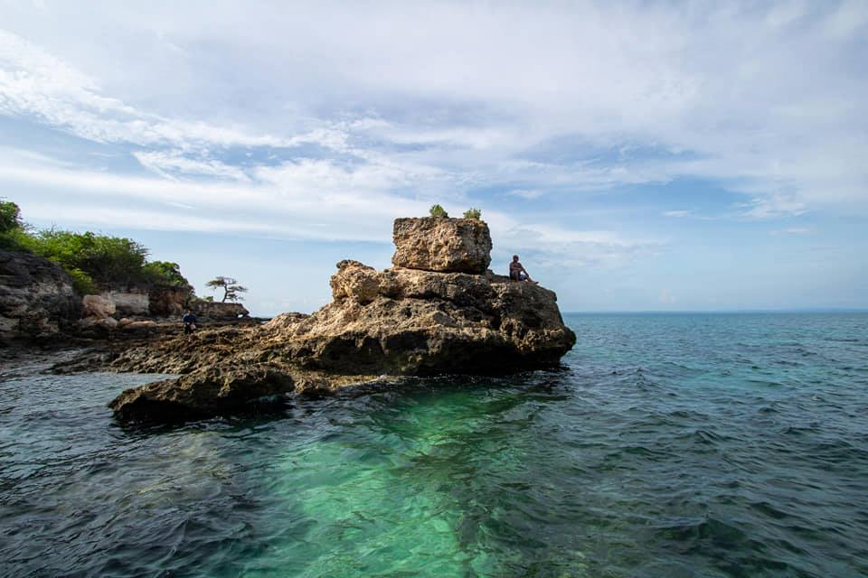
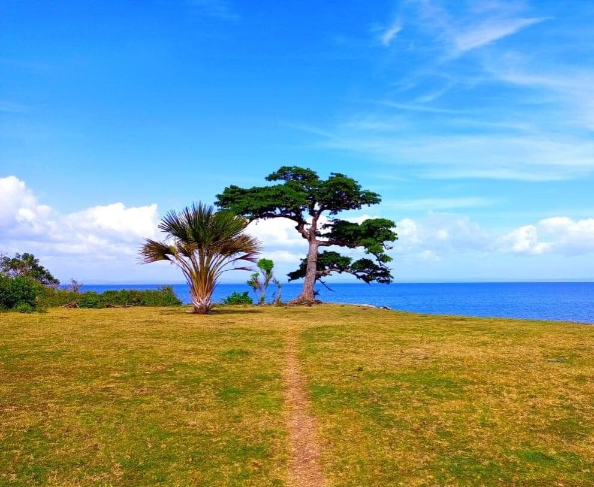
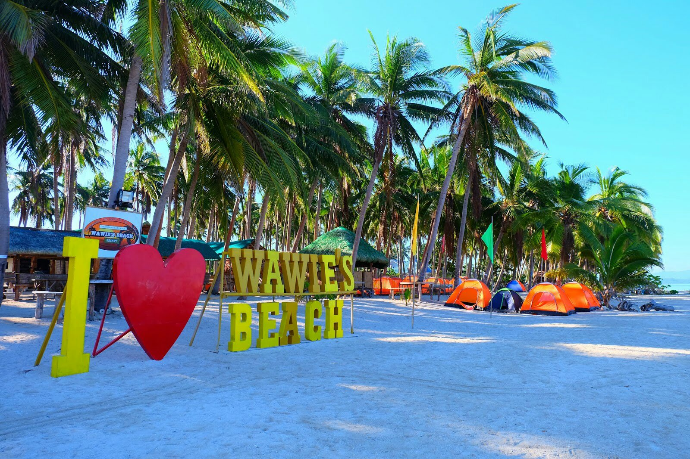
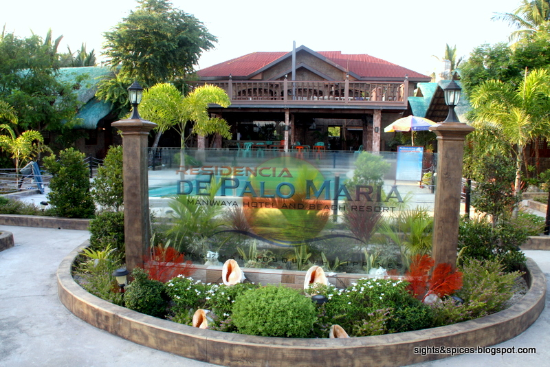

Maniwaya Island is a small,palm-fringed island of the coast of Marinduque that made its mark as an ideal weekend getaway of urbanites. It's a tropical cliche, where you can bask in a white sand while sipping fruitshake or halo-halo or while reading your favorite book perhaps.Maniwaya is an island paradise whose beauty comes from its simplicity. For the longest time, there were no resorts on the island, just a few families living on the island sharing their homes’ simple facilities with locals who sometimes “come over” for a leisurely swim. Local Marinduqueños, particularly residents of Sta. Cruz, would just rent a boat to get to Maniwaya, stay there to swim and frolic under the sun for the day, and head back to the main island before sunset. There were no places to stay. But then, by word of mouth, more and more people got to know about Maniwaya, and it was inevitable for small resorts to rise on the island to provide what the visitors needed.
Located just a short boat ride away from Maniwaya Island, Palad Sand Bar is a stunning natural phenomenon. During low tide, this sandbar emerges, offering visitors a unique opportunity to walk on seemingly endless stretches of fine sand surrounded by crystal-clear waters. Be sure to bring your camera, as the panoramic views and vibrant marine life make for postcard-perfect moments. Palad Sand Bar is a true hidden treasure waiting to be discovered.
Nature lovers will find solace in the enchanting beauty of Sunong Bato. This unique rock formation, sculpted by the relentless waves and winds, showcases the artistic prowess of Mother Nature. The massive boulders create a mesmerizing sight, as they seemingly balance precariously on top of one another. Explore the area, listen to the soothing sound of crashing waves, and let the natural beauty of Sunong Bato leave you in awe.
For the adventurous souls, a visit to Money Tree Cliff is a must. As the name suggests, this cliff is adorned with money trees, creating a mystical ambiance. This natural wonder is a popular spot for cliff diving and adrenaline-pumping jumps into the turquoise waters below. Daredevils will enjoy the rush of soaring through the air before plunging into the cool embrace of the ocean. Whether you’re a seasoned thrill-seeker or simply seeking an exhilarating experience, Money Tree Cliff promises an unforgettable adventure.
Wawies Beach Resort offers guests a serene and relaxing environment, with comfortable accommodations ranging from cottages to beachfront villas. Visitors can enjoy a range of activities such as swimming, snorkeling, kayaking, and island hopping to explore the surrounding natural beauty. Whether you're looking for a romantic retreat, a family vacation, or an adventure-filled getaway, Wawies Beach Resort provides an ideal setting to unwind and create unforgettable memories amidst the stunning backdrop of Maniwaya Island.
Beach Resort is one of the accommodations available on Maniwaya Island in Marinduque, Philippines. It's known for its beautiful beachfront location and facilities catering to tourists looking for a relaxing stay. The resort typically offers amenities such as comfortable rooms or cottages, beachfront access, water sports activities, dining options serving local cuisine, and sometimes even spa services. Many visitors to Maniwaya Island choose to stay at resorts like this one to enjoy the natural beauty of the island while having access to modern conveniences and services.
